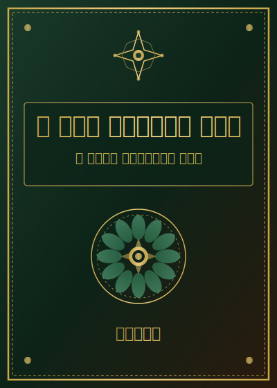

د ځان جوړولو لار
**ټایتل:** د ځان جوړولو لار
**فرعي سرلیک:** د پاکو عادتونو قوت
**لیکوال:** موگلي
**ژبه:** پښتو
**ډول:** شخصي پرمختیا
---
لومړی باب: پیژنه ځان
یو شی دی چې ټول انسانان یې هره ورځ کوي، خو ورته پام نه کوي: هغه ځان ته کتل دي.
زموږ ډیر خلک د ژوند مسافران دي چې د نورو سترګو له مخې ځان وینی. د کلي خلک وایی چې ته داسې یې، نو باید داسې اوسې. مدرسه درته وایی چې ته د فلانکس غوندې شه، بازار درته وایی چې داسې سره وواله، داسې خبرې وکه. خو کله چې شپه راشی، انسان د دواړو سترګو تر منځ یو خالی ځای احساسوي چې نه پوهیږي هغه دی، که نه.
زموږ اجدادو دا خبره ښه پوهیدله. قران کریم وایی: "وفي أنفسكم أفلا تبصرون" یعنې ستاسو خپله وجود کې نښانې دي، ایا نه ګورئ؟ دغه آیت د ځان د پیژندلو لپاره بنسټ ایږدی.
خو د ځان پیژندل یوازې دا نه ده چې ووایو "زه غریب یم" یا "زه قوی یم". ریښتونی ځان پیژندنه یوه داخلی سفر ده، چیرته چې انسان له خپل ځان سره ریښتیا وي.
کله مې یو زوړ خان لیدلی و چې د کونړ غرونو تر لاندې یو کلی کې اوسیده. هغه به تل ویل چې زه پنځوس کاله مخکې هم هماغه سړی وم چې اوس یم. بیا به یې زیاته کوله چې زما جامې تبدیل شوې، زما ویښتان سپین شول، خو زما سوچ هماغسې دی. نور خلک ویل چې دا د ثبات نښه ده. ما بله خبره پکې لیدله: دغه سړی هیڅکله ونه ودریده او خپل ځان ته یې سوال ونه کړ چې آیا زما دغه سوچ سم دی.
نو لومړی قدم دا دی چې ودریږو. ودریږو او پوښتنه وکو: زه اوس چیرته یم؟ د دې ژوند د چومچال له مخه چیرته ورتلم؟ آیا زما عادتونه، زما خبرې، او زما کارونه ما هغه ځای ته بوتلي دي چیرته چې غوښتل مې؟
علماء کرامو د "محاسبه" مفهوم ته خاص اهمیت ورکوي. امام غزالي رحمه الله وایی چې یو هوښیار انسان هر ماښام د خپل ورځ محاسبه کوي: نن ما ورځ آیا ضایع کړه؟ نن مې د خدای د رضا لپاره کومه کوچنۍ کار وکړ؟ نن چاته مې ښه وویل، که بد؟
دا محاسبه هیڅکله د ناکامیو لیست جوړول نه ده. دا یو نرم، مهربانه کتل دي چې ځان ته وکړو. لکه یو ښه دوست چې درته وایی: ملګریه، نن ته داسې وکړل چې ښه نه و. خو سبا بله ورځ ده، سبا بل موقع دی.
د پښتنو کلتور کې د "پت" مفهوم ډیر مهم دی. خو ډیری وختونه موږ د نورو پت ته فکر کوو او د ځان پت هیروو. د ځان پت دا دی چې تاسو له ځان سره بدلون کوئ. هغه عادتونه چې ژوند لنډوي، هغه خبرې چې د نورو زخمونه پرانیزي، هغه ویرې چې له ودې سره مو مخنیوی کوي، دغه ټول د ریښتیني پت سره تضاد لري.
دوهم قدم دا دی چې پوه شو کوم یو عادت اوس مخکې ولاړ دی. یوازې یو. ډیری وختونه خلک وایی: زه غواړم چې غوره انسان شم. دا خورا لوی هدف دی او انسان پوه نه شي چیرته پیل وکي. زما سپارښتنه دا ده: د یوه کوچني عادت له مخه پیل وکه.
که تاسو ووایی چې زه غواړم ډیره پوهه ولرم، نو سبا یوازې لس دقیقې کتاب وولوئ. بس. نه یو ساعت، نه دوه ساعته. لس دقیقې.
انسان اکثراً د پرمختیا لپاره د ستر اراده ور او ستر تبدیلي تمه لري. خو حقیقت دا دی چې ستر تبدیلیانې د کوچنیو مداومو قدمونو له مخه راشی. د رسول الله صلی الله علیه وسلم حدیث دی: "احب الاعمال الی الله ادومها وان قل" یعنې هغه عمل چې الله ته ترټولو خوښ دی، هغه کوچنی عمل دی چې بار بار ادا شی.
دغه حدیث د نوي علم سره موافق دی. ثابته شوي ده چې د انسان دماغ هغه عمل له ځانه سره کوي چې دوه میاشتې لپاره تکراري وي. دغه معجزه ده: شپیته ورځو کې تاسو د ځان د جوړولو یو نوی برخه مالک کیدلی شئ.
وروستۍ خبره چې د دغه باب د پای له پاره وایم: د ځان جوړول د نورو سره مقابله نه ده. کله چې موږ وایو چې زه هلته ورسیږم، موږ ډیری وختونه د چاد پرتله کوو. دا پرتله کول تاسو نه جوړوي، بلکې سوزي.
د ریښتیني پرمختیا معیار دا دی چې تاسو د پخواني ځان پرتله د اوسني ځان وګورئ. آیا تاسو نن یو ملیمه مخکې ولاړئ؟ آیا نن ستاسو زړه یو ذره مهرباني ښودله؟ که هو، نو سبا ته ولاړ شئ.
دا لار اوږده ده. خو هره ورځ چې تاسو پرې ږدئ، هغه ورځ تاسو د پرمختیا سالک یئ.
---
دوهم باب: د عادت جوړولو هنر
انسان عجیبه مخلوق دی. هغه کارونه چې ورته ویریږي، بیا بیا کوي. هغه خوبونه چې خوښیږي یې، هیڅکله ورته نه ورسیږي. دغه ناخوالۍ له کومه راشي؟ ځواب یو دی: عادت.
کله چې موږ د عادت ویو، دغه کلمه ډیری وختونه د یو بد شی سره تړو. خو عادت پخپله خیر یا شر نه دی. عادت یوازې یوه وسیله ده. هماغه وسیله چې یو سړی ورباندې نیکمرغه کیداستلی شي، بله یا هغه ورباندې بدمرغه هم کولی شي.
نوي علم وایی چې زموږ د ورځني ژوند نږدې نیمایي کارونه عادت دی. موږ پوه نه یو، خو دماغ مو ورپسې ولاړ وي. سهار کيندل، ناشته کول، موبایل لیدل، د کار طریقه، حتی غم او خوشحالۍ ته پاملرنه، دا ټول د عادت پایله ده.
د علماوو د ویناوو له مخه، یو عادت درې برخې لري: لومړی هغه اشاره یا "trigger" چې انسان پرې د کار لپاره هڅوي. دوهم هغه کار پخپله. دریم هغه انعام یا احساس چې له هغه کار وروسته پیدا کیږي. دغه درې برخو ته د "عادت دایره" ویل کیږي.
د مثال لپاره: تاسو سهار بیداریږئ (اشاره)، موبایل مو لاس کې اخلئ (کار)، یو لحظه د چاپیریال له سره خبر کیږئ (انعام). دغه چکر راشی تر دې چې تاسو پوه نه شئ. موبایل چیکول اوس عادت شو.
نو که چیرته موږ د عادت دغه دایره پوهیدلی شو، نو موږ یې بدلولی هم شو.
یو مهم خبر دا دی چې عادت یوه ورځ کې نه جوړیږي. پوهانو د دوهزار بارۀ کال کې یوه لویه څیړنه وکړه چې پکې دوه زره زیات خلک برخه لرله. پایله دا وه چې یو عادت د خودکاره کیدو لپاره اوسط کې شپیتۀ پنځه ورځو ته اړتیا ده. ځینې ساده عادتونه لکه د اوبو د پیالې د خوړلو عادت نږدې شل دیرش ورځو کې جوړیږي. مشکل عادتونه لکه ورزش یا لوستل دوه درې میاشتې غواړي.
دلته یو غلط فکر هم شته. ډیری خلک فکر کوي چې که یوه ورځ یې عادت ماتۀ کړ، نو هرڅه له لاسه ورکوي. دا سم نه دي. علم ثابته کوي چې یوه ورځ پریوتل زیان نه رسوي. مهمه دا ده چې بله ورځ بیا پیل وشي.
پښتنه ویل ده: "یو وار لویدل ننګ نه دی، دوه ځله نه پاریدل ننګ دی." دا خبره د عادت جوړولو لپاره خورا مهمه ده.
اوس راشئ چې د عادت د جوړولو لپاره درې عملي لارې وږغم.
لومړۍ لار دا ده چې خپل چاپیریال بدل کړئ. دماغ د چاپیریال غلام دی. که چیرته تاسو غواړئ هره ورځ کتاب ولولئ، یو کتاب خپل بالښت ته پرېږدئ. که چیرته غواړئ نيکلس ودریږئ، سیګرتونه له کوره وباسئ. که چیرته غواړئ نماز وکړئ، جای نماز هر وخت خلاص کینوئ. چاپیریال بدلول د اراده له بدلولو اسانه دی.
پوهانو ثابته کوي چې هغه خلک چې د خپل چاپیریال بندوبست کوي، د هغو خلکو پرتله چې یوازې اراده کاروي، درې چنده زیات د خپلو هدفونو ته رسیږي.
دوهمه لار دا ده چې یو نوی عادت د یو پخواني عادت سره وتړئ. موږ خوشبختانه ډیر عادتونه لرو. سهار د لمانځه عادت شاید لرئ. د چای د پیالې عادت لرئ. بیا د سفر عادت لرئ. پوهانو دغه لارې ته "عادت ایله کول" وایی. دا دي چې نوی عادت د پخواني وروسته ودرولو. "لمانځه وروسته به لس دقیقې کتاب لولم." "د چای پیالو سره به یو نوی کلمه زده کوم." دغه لار ډیر اغیزمن ده ځکه انسان نوی عادت هیروي خو پخوانی یادیږي.
دریمه لار دا ده چې خپل عادت ثبت کړئ. هر وخت چې یو عادت وکړئ، یو نښه کيږدئ. د کاغذ کوچنۍ جدول کافي دی. د ورځو لړۍ مه ماتوئ. دغه کوچنۍ کار ستاسو دماغ ته د بري احساس ورکوي او هغه احساس بیا تاسو هغه عادت ته بیرته بوزي.
رسول الله صلی الله علیه وسلم فرمایلي: "ان الله یحب اذا عمل احدکم عملا ان یتقنه" یعنې الله خوښوي چې کله انسان یو کار کوي، هغه پوره کوي. دغه "پوره کول" یوازې یوه ورځ نه دی. پوره کول یعنې روزانه، مداوم، پرته له منع.
د دغه باب آخر کې غواړم یو مهم رمز وویم. موږ ډیری وختونه د عادت غوره توب لپاره هغه ورځو ته کتو چې ورته عادت وکړو. خو ریښتیني پراختیا له هغه وخت پیل کیږي چې موږ ځان د "دغه عادت سړي" یا "دغه عادت ښځو" وبولو.
مفهوم دا دی چې که تاسو ووایئ "زه هڅه کوم چې سیګرت پریږدم"، هغه له "زه د سیګرت سکونکی نه یم" سره فرق لري. لومړی قضیه یوه هڅه ده. دوهمه قضیه یوه هویت ده. عادتونه هغه وخت ریښتیني کیږي کله چې ستاسو د هویت برخه وي.
نو دغه باب دا پوښتنه تاسو ته ورپریږدم: کوم سړی یا ښځه یئ چې غواړئ اوسئ؟ هغه انسان کوم عادتونه لري؟ د هغو عادتونو له مخه پیل وکئ، نه د هدفونو له مخه. هدفونه د عادتونو پایله دي، نه لامل.
---
دریم باب: کله چې زړه نه کیږي
انسان ډیری وختونه د یوه لوی خوب سره پیل کوي. زړه یې بل وي، سترګو کې رڼا وي، او هغه باور چې "زه به دا کوم" ورسره وي. دغه احساس ښه دی. خو دغه احساس اوږده نه وي.
درې ورځو وروسته، یا ورته شپو وروسته، هغه لومړنۍ جوش ورکه کیږي. ویده کیدل اسانه ښکاري. موبایل پرانیستل اسانه دي. هغه کتاب، هغه ورزش، هغه نوی عادت ورو ورو شاته پاتیږي. انسان ورته وایي چې سبا به پیل کوم. سبا هم ورته خبره راشي.
دغه ستونزه نوې نه ده. هر انسان یې پوهیږي، که ملا وي که مزدور، که ځوان وي که زوړ. دغه د هڅو د ورکیدو معمه ده چې ټول یې پوهیږي خو ورباندې کار کم کوي.
اوس پوهانو یوه مهمه کشفیه کوي. هغوي وایي چې هڅه، یانې د کار کولو هغه خوشحاله احساس، د انسان سره تل نه وي. هغه یو لحظوي احساس دی. پوهانو ثابته کوي چې هغه خلک چې د ژوند لوی کارونه سرته رسوي، هغوي ته هم ډیری ورځو هڅه نه وي. هغوي هم ستوني وي، هم ستړي وي، هم شکي وي. خو دوی کار کوي. ولې؟ ځکه دوی ثبات لري. یانې هغه روزانه بندوبست چې اراده یې نه غواړي، بلکې وخت یا ځای یا چاپیریال یې خودکاره پیل کوي.
یو ملګري مې چې کابل کې کار کوي یو ورځ ویل: زه د مالي علم کتابونه یوه موده لوستل، سهار سره. بیا د عید رخصتیو کې پاتې شوم. کله چې بیرته راغلم، دا عجیبه وه چې کتاب پرانیستل ورته ستونزه نه شوه. لاسونه یې پخپله ورته ولاړل. دغه سړي هویت بدل کړی و. کتاب لوستل ورته د اراده کار نه و، بلکې د سهار یوه عادي برخه وه.
اسلام کې د "مجاهده" مفهوم د دغه موضوع سره نږدې اړیکه لري. د ژوند لوی روحاني پرمختیا داسې نه راشي چې یو انسان یو وخت جوش ولري. پرمختیا د روزانه مجاهدې له لارې راشي. قرآن کریم وایي: "والذین جاهدوا فینا لنهدینهم سبلنا" یعنې هغوي چې زموږ د رضا لپاره کوشش کوي، موږ ورته لارې پرانیزو. دلته "جاهدوا" د جاري عمل کلمه ده، یو وخته نه، بلکې مداومه.
یو زوړ عالم مې د کوچنیوالي کیسه کوله چې یوه استاذ ورته ویلي و: د علم منزلونه د قدمونو له لارې ورکوي، نه د لمنو له لارې. دغه خبره د ثبات درس دی. لمن لوی وي، قدم کوچنی وي. خو قدمونه لار وهي، لمنه نه.
نو دلته یوه ستره رشتیا ده: د هڅه انتظار مه کوه. پیل وکه، هڅه به راشي.
پوهانو دا حقیقت اثبات کوي. کله چې انسان د کار پیل کوي، دماغ د خوشحالۍ هورمون ورکوي. هغه هورمون بیا لیوالتیا راوولي. نو اصل دا نه دي چې کله مې زړه وکړ کار کوم، بلکې دا دي چې کله کار وکوم، زړه مې هم کیږي.
دا د پارادوکس غوندې ښکاري. خو حقیقت دی، او هغه خلک یې خوب ته نه بولي چې یې ازمویلی وي.
زموږ د کلتور کې یوه ویل ده: کار ورسته خلک راشي. دا خبره خورا ژوره ده. یانې هغه وخت چې کار پیل شو، نور مرسته کوونکي لاسونه هم راشي، موقعې هم راشي، باور هم راشي.
اوس راشئ چې د ثبات جوړولو لپاره درې عملي سپارښتنې وکوم.
لومړۍ سپارښتنه دا ده چې د کار وخت ثابت کړئ. که تاسو هره ورځ سهار شپاړسو ته کوم کار کوئ، دماغ مو یو اونۍ وروسته پخپله هلته تیارېدل پیل کوي. وخت د اشارې کار کوي. وخت ته احتیاج نه دی چې هڅه راوباسئ.
دوهمه سپارښتنه دا ده چې کوچنی پیل وکئ. که تاسو لس دقیقې پر ورځ کار کوئ، هغه لس دقیقې بس دي. انسان له خپل ځان سره ژمنه اتوماتیکه کوي. کله چې ژمنه وکوي او وکوي، باور جوړیږي. هغه باور بیا لوی کارونه هم لاره کوي.
دریمه سپارښتنه دا ده چې د ماتیدو وروسته چټکه راپاریږئ. یوه ورځ چې له لارې وتلئ، خپل ځان ته وایئ چې سبا به مې بیا پیل کوي. نه سزا، نه اوږده خپه کیدل. یوازې بیا پیل. پښتنه ویل ده: یو وار لویدل ننګ نه دی، دوه ځله نه پاریدل ننګ دی.
رسول الله صلی الله علیه وسلم وایي: "المؤمن القوي خیر وأحب إلی الله من المؤمن الضعیف وفي کل خیر" یانې قوي مومن د کمزوري مومن پرتله د الله ته ښه دی. دا قوت یوازې جسماني نه دی. ذهني ثبات هم پکې شامل دی.
د کوچنیو قدمونو د دوام یوه اوږده زنځیره جوړیږي. تاسو چې اوس یو قدم اوچتوئ، هغه د کلونو وروسته د لویو پایلو لامل کیږي. ریاضیانو دا د مرکب ودې اغیزه بولي. یو سلنه ورو ورو زیاتیدل یو کال وروسته شپیتۀ اته سلنه ودې ته رسیږي.
د ژوند ریښتیني قوت هڅه نه ده. هڅه ورشي او راشي. ریښتیني قوت هغه کوچنی کار دی چې هره ورځ تاسو یې کوئ، که زړه مو کیږي که نه. هغه کار د ځان جوړولو اصلي مواد دی، او هغه مواد هیڅوک له تاسو نه اخیستلی شي که تاسو پخپله یې مه ورکوئ.
---
څلورم باب: د فکرونو سمبالول
انسانان هره ورځ اوسط کې شپیتۀ زر فکرونه کوي. دغه شمیر د علماوو له مخه ده. دغه معنی دا ده چې موږ د هرې یوې دقیقې لپاره نږدې پنځوس فکرونه کوو. ډیر فکرونه. خو له دغو ټولو فکرونو نه موږ خبر نه یو. ډیر فکرونه خودکاره راشي او خودکاره ځي، لکه باد چې د کور مخ ته تیریږي.
خو یو شی ده چې پوهانو معلوم کړی دی: د هغو شپیتۀ زرو فکرونو نږدې نویه سلنه هماغسې دي لکه پرونۍ فکرونه. او د هغو نویه سلنه فکرونو ډیری برخه منفي ده. دغه د انسان ذهن طبیعي حالت دی، نه ستاسو ستونزه. دماغ د خطر لټون کې وي، ځکه د پخوا انسانانو ژوند خطرونو ډک و. اوس دغه کار ضرورت کم دی، خو دماغ لا هم همداسې ده.
نو پوښتنه دا ده: آیا موږ دغه منفي فکرونو ته غلام یو؟ ځواب نه دی. خو لومړی باید پوه شو چې دغه فکرونه له کومه راشي.
د پخوانیو علماوو کې د "خطرات" مفهوم مشهور دی. امام غزالي رحمه الله وایی چې یو فکر چې د زړه مخ ته راشي، لومړی بی رنګ دی. نه ښه دی نه بد. هغه ته خطره وایي. انسان خپله هغه ته رنګ ورکوي. که هغه ته ډیره پاملرنه وکړه، هغه فکر لوی شي. که یې نادیده وکي، هغه ورکیږي.
دغه خبره د اوسني علم سره بالکل سمه ده. پوهانو ثابته کوي چې هغه فکرونه چې موږ ورته پاملرنه کوو، ذهن کې ژوري شي. هغو فکرونو ته چې موږ یوازې کتو او بیا ورسره نه جنجال کوو، هغه ذهن نه ورکیږي.
یو مثال: تاسو د یوه مهم کار مخه یئ. یو منفي فکر راشي چې "زه به پاتې راشم." دوه لارې شته. لومړۍ لار دا ده چې ووایئ "نه، دا فکر سم نه دی" او ورسره مبارزه وکئ. دوهمه لار دا ده چې ووایئ "یو فکر راغی، دا زه نه یم، دا یوازې یو فکر دی" او بیا خپل کار ته واوړئ. علم ثابته کوي چې دوهمه لار ډیره اغیزناکه ده.
د دغه لارې نوم د علماوو کې "مشاهده" ده. انسان د خپلو فکرونو شاهد وي، نه هغو کې ډوب. صوفیانو دغه حالت ته "حضور" هم وایی. دا یانې دا چې انسان د خپل ذهن مشاهده کوي لکه چې د دریاب غاړه کیني او اوبه وینی، اوبه ورپسې نه ځي.
اسلام کې د "تفکر" عبادت دی. قرآن کریم وایی: "فاذکرونی اذکرکم" یعنې ما یادوئ، زه به هم تاسو یادوم. دا یادونه د ذهن پاکوالي لپاره یوه طریقه ده. کله چې انسان د خدای یاد کوي، ذهن یې له کوچنیو خپګانو نه خلاصیږي او لوی تصویر ویني.
اوس راشئ چې د فکرونو د سمبالولو لپاره درې عملي لارې وباسو.
لومړۍ لار دا ده چې د خپلو فکرونو "کتنه" پیل کړئ. سهار لس دقیقې چپ کینئ. د ذهن د شور سره مه جنجال کوئ. یوازې وینئ چې کوم فکرونه راشي. که د غم فکر راشي، ورته وایئ "غم". که د ویرې فکر راشي، ورته وایئ "ویره". بس. نه ورسره خبرې وکوئ، نه یې تعقیب کوئ. دغه کوچنی تمرین د وخت سره ذهن ته آرامش راوولي.
دوهمه لار دا ده چې خپل منفي فکرونه ولیکئ. کله چې یو منفي فکر راشي، یو کاغذ یا موبایل یادښت کې ورته یو ټکی ولیکئ. بس یو ټکی. دا لیکل عجیبه ده، خو علم وایی چې کله انسان فکر لیکي، هغه فکر له ذهنه راووزي او د کاغذ پر مخ ولاړ شي. بیا انسان له بهر ورته کتلای شي. پوهانو ثابته کوي چې دا طریقه د منفي فکرونو اغیزه نیمه کوي.
دریمه لار دا ده چې پوښتنه وکوئ. هغه ستونزمن فکر ته وایئ: "آیا دا رښتیا ده؟ آیا دغه فکر لپاره دلیل شته؟ که رښتیا ده، نو زه یې سمول کولای شم؟ که نه سمیږي، نو اوس پرې کار کول مې ګټه لري؟" دغه پوښتنې فکر له جذباتي حالت نه د منطقي حالت خواته راوباسي.
حضرت علی رضی الله عنه ویلي دي چې فکر کول د روڼتیا چراغ دی. خو دا فکر د ښو لارو پر مخ وي. که چیرته فکر یوازې د ویرو او پرتلو او بدبینۍ پر لار ولاړ شي، هغه چراغ نه بلیږي بلکې سوزي.
یوه ستره ریښتیا دا ده چې موږ نه شو کولای چې فکرونه بند کوو. خو موږ کولای شو چې وټاکو کوم فکرونو ته به وخت ورکوو. دغه توپیر ستر دی. لکه چې موسیقار د ساز تار غوره کوي. هر تار غږ لري، خو موسیقار غوره کوي کوم ته انگښت ولگوي.
د ځان جوړول د فکرونو جوړولو سره پیل کیږي. عادتونه له فکرونو راشي. چلند له فکرونو راشي. پریکړې له فکرونو راشي. نو که چیرته تاسو غواړئ بهرنی ژوند بدل کوئ، لومړی باید د ذهن باغ پاک کوئ.
پخوانی پښتانه به ویل چې د سینې خبره د مخ ته راشي. یانې انسان هر هغه شی چې دننه لري، بهر راخیستل کیږي. که دننه سکون وي، بهر سکون ښکاري. که دننه آشوب وي، بهر هم آشوب راشي.
دغه باب دا ته ختمیږي: تاسو د خپلو فکرونو خاوند یئ، نه هغو فکرونو غلام. فکرونو ته د یوه لار تیریدونکي مسافرانو غوندې وکتل چې کوم دی چا ته ځی او چا ته نه ځی. دغه انتخاب تاسو د خپلو فکرونو مالک کوي، او هغه مالکیت د ریښتیني ځان جوړولو پیل دی.
پنځم باب: د اسلام له نظره د ځان جوړول
د ځان جوړول یوازې یو دنیاوي هدف نه دی. اسلام، چې زموږ د ژوند بشپړ لارښود دی، د ځان اصلاح کولو ته ډیر لوی ارزښت ورکوي. قرآن کریم او د رسول الله ﷺ حدیثونه موږ ته روښانه کوي چې هغه انسان چې خپل نفس جوړوي، خپل اخلاق ښه کوي، او خپل عقل پر علم بنا کوي، هغه نه یوازې دنیا کې بریالی کیږي بلکې آخرت ته هم ښه زمینه برابروي.
**د قرآن کریم لارښوونه**
الله تعالی د رعد سورت کې فرمایي: "إِنَّ اللَّهَ لَا يُغَيِّرُ مَا بِقَوْمٍ حَتَّى يُغَيِّرُوا مَا بِأَنفُسِهِمْ" — الله د هیچا حالت نه بدلوي تر هغه وخته چې دوی پخپله خپل حالت ونه بدلوي. دغه آیت کریمه موږ ته ښیي چې د ټولنې، د کورنۍ، او د شخصي ژوند بدلون له دننه پیل کیږي، له ځان نه پیل کیږي.
هر مسلمان چې دغه آیت ته پام وکړي، پوهیږي چې د بریالیتوب لار له ځان جوړولو نه تیریږي. الله تعالی پخپله وعده کړې ده چې کله انسان خپله بدل کړي، نو ددې بدلون اغیزه به یې ژوند ته هم رسیږي.
**د رسول الله ﷺ د سیرت درس**
رسول الله ﷺ چې د ښو اخلاقو بشپړ نمونه دی، فرمایلي دي: "إنَّمَا بُعِثتُ لأُتَمِّمَ مَكَارِمَ الأَخلاقِ" — زه د اخلاقو بشپړولو لپاره لیږل شوی یم. دغه حدیث موږ ته ښیي چې اسلام د اخلاق او شخصیت جوړولو دین دی. د پیغمبر ﷺ ژوند د ځان جوړولو، صبر، تواضع، او بشپړتیا لټولو یوه ژوندۍ بیلګه ده.
هغه کس چې د رسول الله ﷺ سیرت لولي، ویني چې پیغمبر ﷺ تر ټولو سختو شرایطو کې هم اخلاق نه هیروه. کله چې طائف کې یې کاڼي وویشتل، بیا هم بد نه وویل. کله چې دښمنان راورتلل، بیا هم عدل نه هیراوه. دغه د ځان د بشپړ واک لرلو بیلګه ده، چې موږ ورته کتل غواړو.
**د تزکیه نفس مفهوم**
اسلام کې "تزکیه نفس" یعنې د ځان پاکول او جوړول. الله تعالی د شمس سورت کې فرمایي: "قَدْ أَفْلَحَ مَن زَكَّاهَا، وَقَدْ خَابَ مَن دَسَّاهَا" — هغه بریالی شو چې نفس یې پاک کړ، او هغه ناکام شو چې نفس یې ولوله.
"زکاها" — نفس پاکول — د ځان جوړولو اسلامي اصطلاح ده. دغه مفهوم تزکیه یوازې د لمانځه او روژې پورې نه دی. دا د ټول ژوند پاکولو پروسه ده: زموږ سوچونه، زموږ خبرې، زموږ عادتونه، زموږ اخلاق، او زموږ اغیزه پر نورو.
هغه مسلمان چې هر ورځ پخپل ځان کار کوي، ناوړه عادتونه ترې لرې کوي، ښه عادتونه پکې ځای کوي، او خپل نیت پاک ساتي، هغه واقعي تزکیه ترسره کوي.
**د دنیا بریالیتوب او د ایمان اړیکه**
ډیری خلک فکر کوي چې د دین او دنیا بریالیتوب سره سره نه تلای شي. خو اسلام دغه دواړه سره یوځای کوي. رسول الله ﷺ فرمایلي دي: "اعمل لدنياك كأنك تعيش أبداً، واعمل لآخرتك كأنك تموت غداً" — د دنیا لپاره داسې کار وکړه لکه چې تل ژوندی به یې، او د آخرت لپاره داسې چې سبا به مړ شې.
دغه حدیث موږ ته ښیي چې اسلام موږ ته دنیا پریښودل نه وايي. بلکه موږ ته وايي چې دنیا هم ښه وکړئ، او آخرت هم. هغه مسلمان چې خپل کار ښه کوي، خپل علم زیاتوي، خپل اخلاق جوړوي، او خپل ژمنې ساتي، هغه نه یوازې ربانی انسان دی، بلکې دنیا کې هم بریالی کیږي.
**د صبر قوت**
یو له هغو اسلامي ارزښتونو چې د ځان جوړولو لپاره خورا اغیزناک دی، هغه صبر دی. قرآن کریم کې "صبر" شاوخوا نوي ځله ذکر شوی دی. الله تعالی فرمایي: "إِنَّ اللَّهَ مَعَ الصَّابِرِينَ" — الله د صابرینو سره دی.
صبر د ځان جوړولو بنسټ دی. هغه کس چې له ناکامۍ وروسته نه مات کیږي، چې له سختیو وروسته لا زیات کلک کیږي، چې خپل هدف ته ورو ورو مخ ته ځي، هغه صبر کوي. او صبر کوونکی نه یوازې الله تعالی سره وي، بلکې وخت سره هغه کامیاب کیږي چیرې چې نور ماتیږي.
د پشتون ټولنې کې دا ویل کیږي چې "صبر د ولو کیلي ده." دغه خبره له اسلامي ارزښتونو سره موافقه ده. هغه کار چې ژر تمامیدلی نشي، هغه هدف چې پوره کیدلو ته وخت پکار دی، هغه انسان یې ترلاسه کوي چې صبر لري.
**د اخلاقو او بریالیتوب اړیکه**
اسلامي تاریخ موږ ته ډیرې بیلګې ورکوي چې ښه اخلاقو لرونکي خلک د وخت سره بریالي شوي. امام بخاري رحمه الله چې له ماشومۍ نه یې د حدیثونو زده کولو لپاره ستونزې وزغمل، هغه اوس هم د علم نوم دی. امام شافعي رحمه الله چې د فقر سره یې مقابله وکړه خو علم نه یې پریښود، هغه اوس هم مرجع دی.
نننۍ دنیا کې هم دغه اصل صادق دی. هغه مسلمان سوداګر، ډاکټر، انجنیر، یا معلم چې خپل کار امانت سره کوي، چې له خلکو سره صادق دی، چې د وعدې خلاف نه کوي، هغه وخت سره د خلکو باور ګټي. او باور د هر بریالیتوب بنسټ دی.
**د ځان جوړول لپاره عملي اسلامي لارې**
لومړی: هر سهار د فجر لمانځه وروسته لنډه مراجعه وکړئ: نن کوم یو ناوړه عادت له ما لرې کوم؟ کوم یو ښه عادت نن پکار راولم؟ دغه ورځنۍ پوښتنه ستاسو د تزکیه نفس پروسه ده.
دوهم: د رسول الله ﷺ د سیرت یوه کیسه هره اونۍ ولولئ. له هغه کیسو نه درس واخلئ چې پیغمبر ﷺ د سختیو سره چیرته مقابله وکړه. هغه درسونه ستاسو ژوند ته هم لاغوندی کیږي.
دریم: کله چې ستاسو زړه ډب کړي، کله چې مشکل راشي، دا دعا وکړئ: "اللهم إني أسألك الثبات في الأمر والعزيمة على الرشد" — یا الله! زه درنه د کارونو کې ثبات او د ښو لارو لپاره عزم غواړم. دغه دعا ستاسو هدف ته پیاوړتیا ورکوي.
**پایله: د ایمان او ترقۍ یووالی**
دغه باب لپاره یوه مهمه خبره: د ځان جوړول له ایمان نه جلا نه دی. بلکه ریښتینی ایمان ستاسو د ځان جوړولو لوی ځواک دی. کله چې پوه شئ چې الله تعالی ستاسو هر عمل ویني، نو کیفیت مو بدلیږي. کله چې پوه شئ چې صبر الله تعالی ته خوښ دی، نو صابر کیدل اسانه کیږي. کله چې پوه شئ چې صدق او امانت اسلامي فرضونه دي، نو ستاسو سوداګري، ستاسو کار، او ستاسو اړیکې بدلیږي.
هغه مسلمان چې دنیا ته راغلی دی، ورته دنده ورکړل شوې ده: خپل ځای ښه کول، خپل ځان ښه کول، او خپلو خلکو ته ګټه رسول. دغه درې کارونه یو له بل سره تړلي دي. او ټول د یوه شي نه پیل کیږي: له ځان نه.
شپږم باب: د شکرګزارۍ ځواک
یو وخت یو زوړ سړی خپل کور دروازه ته ناست و. د هغه کور نه دوه کلیواله تیریدل. یوه یې وویل: دغه کلی ستونزمن دی، خلک یې ناشکره دي. بل وویل: دغه کلی ښه دی، خلک یې مهربان دي. زوړ سړي ودریده او وویل: دواړو تاسو سم ووایه. تاسو هغه کلی ومومئ چې د خپل زړه تصویر ورته وکاږئ.
دغه کوچنۍ کیسه د ژوند یوه لویه ریښتیا لري. هغه سړی چې د خپل ژوند نه ناشکر دی، هغه پر هر خواته ناشکري ویني. هغه سړی چې د خپل ژوند لپاره شکرګزار دی، هغه پر هر خواته نعمتونه ویني. دغه توپیر یوازې د نظر توپیر نه دی. دغه د ژوند کیفیت یوه واقعي بدلونه ده.
پوهانو له ډیرو کلونو راهیسې د شکرګزارۍ پر اغیزو مطالعه کوي. هغو دا معلومه کړه چې هغه خلک چې هره ورځ د خپلو نعمتونو لپاره شکر کوي، هغه د نورو خلکو نه ډیر خوشاله دي، د خوب ښه کیفیت لري، لږه ناروغه کیږي، او سختیو سره ښه مقابله کولای شي. شکرګزاري یوازې یوه احساساتي خبره نه ده. دا د ذهن یوه عملي وسیله ده.
خو د پښتون ټولنې لپاره دغه خبره نوې نه ده. زموږ پخوانیو به ویل چې "د خدای نعمتونه شمیر نه شي." دغه خبره له شعر یا دعا پرته یوه ژوره ریښتیا ده. هر سهار ویښیدل خپله یوه نعمت دی. ساه اخیستل نعمت دی. سترګو ليدل، خولو خوراک، پښو ولاړیدل، هر یو د الله تعالی بخشنه ده.
د شکرګزارۍ لویه ستونزه دا ده چې انسان نعمتونو ته عادي کیږي. لومړي ځل چې موبایل واخیستئ، خوشحاله وئ. اوس هغه خوشحالي ختمه شوه، نو بل تیل لپاره زړه کیږئ. دا د ذهن طبیعي حالت دی. علماوو ورته "د نعمت کمیدونکی اغیز" وایي. خو دغه حالت بدلولای شو.
هغه کار چې پوهانو وویل دا دي چې هر ورځ درې نعمتونه ولیکئ چې نن مو احساس کوله. دغه نعمتونه اړینه نه ده چې لوی وي. شاید چای مو ډیر خوند ورکه، شاید یو ملګري ستاسو سلام وکه، شاید چې د لمر د لوید منظر مو ولید. دغه کوچنۍ شیان لیکل ذهن ته ورزش دی. وخت سره ذهن د خوشحالیو لټون کې ماهر کیږي ځکه هغه پوهیږي چې موږ ورته اهمیت ورکوو.
اسلام کې د شکر اهمیت بل هر دین او فلسفې نه لوی دی. الله تعالی د ابراهیم سورت کې فرمایي: "لَئِن شَكَرْتُمْ لَأَزِيدَنَّكُمْ" یعنې که مو شکر وکه، زه به تاسو ته نور هم زیات کوم. دا وعده ده. الله تعالی وایي چې شکر کوونکي انسان ته نعمتونه زیاتیږي. دا یوازې روحاني خبره نه ده، بلکه دا د ژوند یو عملي قانون دی.
رسول الله ﷺ فرمایلي دي: "مَن لَم يشكر الناسَ لَم يشكر الله" یعنې هغه چا چې خلکو ته مننه ونه کړه، هغه الله تعالی ته هم شکر نه دی کړی. دغه حدیث موږ ته ښیي چې شکر یوازې د لمانځه او دعا وخت نه دی. شکر هغه وخت هم دی چې د ناورین وروسته یو ملګری د مرستې لپاره راغی او موږ ورته "مننه" وکوو. شکر هغه وخت هم دی چې د چا ښه کار ووینو او ورته وستایو.
د ژوند ستونزو ته له شکر سره کتل یوه بل نوی توان ورکوي. کله چې یو کار پاتې راشئ، تاسو کولای شئ چې ووایئ "لږ تر لږه مې هڅه وکړه، دغه هم نعمت دی." کله چې مريض شئ، ووایئ "لږ تر لږه روغتیاب شته، ملګري شته چې پاملرنه مې کوي." دا تصنع نه دی. دا د ذهن یو مهارت دی چې سختیو کې هم اوبه شمیرل زده کوي.
پښتو کې یو خوب مثل دی: "چې سر وي، پګه به هم وي." یانې که ژوند وي، ژوند به ښه هم کیږي. دغه د شکر یوه بیلګه ده. ژوند پخپله، تکلیفونو سره سره، یو نعمت دی.
د شکرګزارۍ یو بل پلو دا دی چې هغه موږ له نورو سره تړي. هغه انسان چې شکرګزار دی، هغه ویني چې خپل بریالیتوب یوازې د ځان کار نه دی. ملګري، کورنۍ، ښوونکي، او هغه ناپیژندلي خلک چې له ستاسو دمخه لارې جوړې کړې، هغو ټولو ستاسو د اوسني ځای لپاره ونډه اخیستې ده. دغه پوهاوی تکبر نه پریږدي ودریدل، بلکې موږ مین کوي چې بل ته هم ونډه واخلو.
اوس یو عملي کار وکوئ. اوسمهال، دغه کتاب چې لولئ، درې خلک پکار دي چې یادوئ: یو هغه کس چې تاسو ته یو کوچنی احسان وکه، یو هغه کس چې له تاسو سره ولاړ شو کله چې ستاسو ضرورت و، او یو هغه کس چې ستاسو پر خوشحالي یې خوشحالي کوي. دغه درې نومونه ذهن کې ولرئ. بیا د هغوی لپاره دعا وکوئ. دغه کوچنی کار ستاسو ذهن کې یو ګرم احساس راوباسي چې پوهانو ثابته کوي چې خوشحالي زیاتوي.
شکرګزاري ستاسو د ځان جوړولو پروسه کې یوه پطری ده. کله چې شکرګزار یئ، د ناکامیو درد کم دی. کله چې شکرګزار یئ، د بریالیتوب خوشحالي زیاته ده. کله چې شکرګزار یئ، نور خلک ستاسو شاوخوا راټولیږي ځکه خلکو ته مثبتو خلکو سره اوسیدل خوښ دي. او کله چې شکرګزار یئ، ستاسو هدف ته لار اسانه ده ځکه زړه مو له ناشکرۍ باره نه دی.
الله تعالی فرمایي: "أَلَا بِذِكْرِ اللَّهِ تَطْمَئِنُّ الْقُلُوبُ" یانې پوه شئ چې د الله د یاد سره زړونه اطمینان مومي. د شکرګزارۍ اصل د الله د یاد له لارې ده. هر نعمت ویني او الله ته سجده وکوي، هغه ذهن کله هم بې آرامه نه وي.
د دغه باب د پای لپاره یوه وروستۍ خبره: شکرګزاري د ضعف نښه نه ده. هغه وياره کس نه دی چې مننه وکوي. هغه هغه کس دی چې پوهیږي ژوند یوازې د خپلو کوشنو کارونو پایله نه ده، بلکې د ډیرو لویو او نامعلومو لاسونو ونډه هم دکار ده. دغه پوهه ستاسو د ځان جوړولو لار ته ژور بنیاد ورکوي چې د باد سره ماتیدونکی نه دی.
اووم باب: د ماتیدلو وروسته بیا ودریدل
یوه ورځ یو ځوان د خپل ښوونکي سره ناست و. هغه وویل: ما ډیرې هڅې وکړې، خو بیا هم پاتې راغلم. ما ویره ده چې زه هیڅکله بریالی نه شم. ښوونکي خندا وکړه او وویل: ته هغه کس نه یې چې ماتیدلی دی. ته هغه کس یې چې د ماتیدلو وروسته راغلی یې. دا ارزښت لري.
دغه کوچنۍ خبره د ژوند یوه لویه ریښتیا لري. ناکامي د پای نښه نه ده. ناکامي د لارې یوه برخه ده. هغه خلک چې بریالي شوي دي، هغوی ناکامیو نه ژغورل شوي نه دي. هغوی ناکامیو نه زده کول کوي.
دنیا کې هر لوی بریالی انسان لومړی ناکامه شوی دی. ابراهیم علیه السلام کاڼو ووهل شو. یوسف علیه السلام بندي شو. رسول الله ﷺ له مکې سره ووتو. موسی علیه السلام د بحر مخه کې ودریده. دغه ټول هغه خلک دي چې تاریخ یادوي. او دغه ټول هغه وختونه دي چې هغوی ویره کیدل، سوچ ورته راغی چې شاید لار بنده ده. خو دوی ودریدل نه. هغوی بیا خوځیدل. او ادامه یې ورکوله.
آج ته علم دا ښیي چې انسان د ناکامۍ وروسته بیا ودریدل زده کولای شي. پوهانو له ډیر وخته دا ثابته کوي چې انساني ذهن د ستونزو او ناکامیو سره مقابله کولو وس لري، که له هغوی نه سم لوری واخلو. دغه وس ته "د ودانیدلو توان" یا resilience وايي. خوشخبري دا ده چې دغه توان فطري کمي زیاتي لري، خو هر چا کې وي، او هر چا کولای شي چې زیات کړي.
پوهانو دا وموندله چې هغه خلک چې ناکامۍ وروسته بیا ځانونه سنبالوي، هغوی درې عمده ځانګړتیاوې لري. لومړی یې دا چې ناکامي د خپل بشپړ هویت حصه نه بولي. هغه وايي "ما دا کار ناکامه وکه" نه وايي "زه یو ناکامه انسان یم." دغه توپیر ډیر مهم دی. هغه چا چې ناکامي د ځان حصه بولي، هغه د سباوون هڅه پریږدي. هغه چا چې ناکامي یوه موقعه بولي، هغه د بل سبا لپاره پلان جوړوي.
دوهمه ځانګړتیا دا ده چې هغوی د احساساتو سمبالول زده کوي. کله چې ناکامي رارسیږي، زړه درد لري. دا طبیعي دی. خو هغه خلک چې بیا ودریږي، هغوی احساساتو ته وخت ورکوي، خو هغوی ته د ژوند ولکه نه ورکوي. هغوی ژاړي، خپه کیږي، خو بیا پخپل ذهن کې پوښتنه کوي: له دغه ناکامۍ نه زه څه زده کولای شم؟
دریمه ځانګړتیا دا ده چې هغوی سره ملګري لري. هغه خلک چې یوازې دي، د ناکامۍ سره مقابله ورته سخته ده. خو هغه خلک چې یو یا دوه ریښتیني ملګري لري چې بد وخت کې ورسره وي، هغوی ژر بیا پخپلو پښو ودریږي.
پښتنو کې دغه دریواړه اصول د کلتور برخه دي. زموږ د کلتور کې د ملګرتیا ارزښت ډیر دی. کله چې یو سړي کار پاتې راشي، قوم راټولیږي. کله چې یوه کورنۍ ستونزه لري، ګاونډي راځي. دغه روایت د ناکامۍ سره مقابله کولو لپاره یوه طبیعي سیستم دی چې زموږ پخوانیانو ورته پوهیدل.
خو اوسمهال، چې ژوند یوازیتوب ته لاړ دی، چې خلک د ښارونو کوچنیو خونو کې ژوند کوي، هغه طبیعي سیستم کمزوری شوی دی. نو موږ باید ور پام کوو. خپل ملګري وساتئ. د خپل کلتور د ملګرتیا پرهنک له لاسه مه ورکوئ.
د ناکامۍ سره مقابله کې یو بل مهم کار دا دی چې د ناکامۍ کیسه بدله کئ. کله چې ناکامي رارسیږي، زموږ ذهن یوه کیسه جوړوي. ډیری وختونه دا کیسه دا ده: "زه کافي نه یم. ما ناکامه شو. نور به هم وکوم." خو دغه کیسه بدله کیدای شي. ورته وویل شي: "ما دا هڅه وکړه. د دوهم ځل لپاره زیات پوه یم. اوس به بل ډول وکوم."
پوهانو لیکل ثابته کوي چې د ذهن لپاره ګټمند دی. هغه کله چې یو ناشونی پیښه پیښیږي، لیکل ذهن ته مرسته کوي چې فکرونه سره سمبال کوي. که تاسو د ناکامۍ وروسته خپل فکرونه ولیکئ، یوه اونۍ وروسته به ووینئ چې ستاسو ذهن ډیر روښانه دی. د هغه موقعې درد کم شوی وي، او د لارې تصویر واضح شوی وي.
اسلام کې دغه مفهوم د "توبه" او "بیا پیل کولو" سره تړلی دی. د توبه مفهوم یوازې د ګناه وروسته نه دی. د توبه مفهوم دا دی چې کله هم لار نیواله، بیا سمه لار راوخله. رسول الله ﷺ فرمایلي دي: "كُلُّ ابنِ آدمَ خَطَّاءٌ وَخَيرُ الخَطَّائِينَ التَّوَّابُونَ" یعنې د آدم هر زوی غلطي کوي، او غلطي کوونکو کې تر ټولو ښه هغه دي چې بیرته راستانه کیږي.
دغه حدیث موږ ته درس ورکوي چې غلطي کول انسانیت دی. خو غلطۍ وروسته بیا د سمې لارې خوا اوښتل، هغه عزت او ارزښت دی. هغه انسان چې ناکام شو، خو بیا هم هڅه کوي، هغه نه یوازې د خپل ذهن احترام کوي، بلکه الله تعالی هم هغه ته مرسته کوي.
د افغانستان تاریخ یو لوی ثبوت دی. دغه خلک پر وار وار تیر ایستل شوي دي. خو بیا هم ودریدلي دي. بیا هم له سره پیل کړی دی. دغه د ناکامۍ وروسته بیا ودریدلو یوه ژوندۍ بیلګه ده چې زموږ وینه کې ده.
د دغه باب عملي درس دا دی:
لومړی، کله چې ناکامي رارسیږي، لومړی درې ورځې ورته اجازه ورکوئ چې درد وکوئ. د احساساتو له ندا نه مه تیریدئ. بیا کاغذ واخلئ او لیکئ: ما له دغه ناکامۍ نه درې مهم درسونه زده کول.
دوهم، د ناکامۍ وروسته هغه یو شی وپیژنئ چې تاسو ته د بیا ودریدلو لپاره کوچنی قدم دی. ټول کار نه، یوازې یو کوچنی قدم. هغه کوچنی قدم واخلئ. دغه کوچنی قدم به ستاسو ذهن ته ثابتوي چې تاسو لا هم متحرک یئ.
دریم، خپل دعا کې دا الله تعالی ته وویل: "یا الله، ما ماتیدم. خو له تا نه به جلا نه شم. لار ماته ښه کوه." دغه بشپړ صدق دی. بشپړ توکل دی. او بشپړ قدم دی د بیا ودریدلو پر لور.
ماتیدل د پای نه دي. ماتیدل د نوی پیل پیل دی که دغه موقعه ورته سمه وکاروئ. هر لوی ونه لومړی یو کوچنی بوټی و. هر لوی سوری لومړی یو کوچنی ستن و. هر لوی انسان لومړی یو کوچنی کس و چې ماتیدی و، خو بیا هم ولاړ شو.
اتم باب: د وخت ارزښت
یوه زوړه پښتنه ویینه ده: "وخت لکه اوبه دی، یو ځل تیر شو نو بیا نه راستانیږي." دغه ساده جمله کې د ژوند یوه لویه ریښتیا پراته ده. هر سبا چې سترګې خلاصیږي، دوولس ساعته موږ ته راکول کیږي. نه یو ثانیه لږ، نه یو دقیقه زیات. بادشاه هم دومره وخت لري، فقیر هم. پوهیدل چې دغه وخت سره ولو وکوي او ولو هدر کوي، هغه دی چې د ژوند کوارټه بدلوي.
اوسمهال د تیلیفون، سوشل میدیا، او لرې ناستو سره ژوند داسې جوړ شوی دی چې وخت له خپل نه خبر نه یو ورکوو. یو کس شپه وروسته فکر کوي: نن ما له سهار نه تر ماښامه ولو وکه؟ ملا یې سخت دی. فکرونه یې ستړي دي. خو کار یې خو هغه و چې صبح یې ورته لیکلی و. دغه احساس د ستړیا پرته د بریالیتوب نه شه.
پوهانو ثابته کوي چې انسان هره ورځ شاوخوا درې تا پنځه ساعته پر هغه کارونو تیروي چې نه ضروري دي، نه مفید. موبایل سکرین ته کتل، بې هدفه خبرې، د بوخت والي وانه وو لپاره د یوه کار له یوه بل ته لویدل. دغه وخت چې ستاسو له ژوند نه خارجیږي، تاسو یې د ستا نه سترګو کته نه ویني، خو د کال پای کې چې حساب وکوئ، اوه سوه ساعته وي. دغه اوه سوه ساعته د یوه لوی مهارت زده کولو یا یوه مهم کار بشپړولو لپاره کافي وو.
د وخت سم کارول لومړی دا اړتیا لري چې پوه شئ اوسمهال ستاسو وخت چیرته ځي. یوه اونۍ لپاره د هر ورځ سهار یوه کاغذ واخلئ او لیکئ چې ورځ مو پر کوم کارونو تیره شوه، اندازه لس دقیقو مخینې سره. دا عمل ستاسو سترګې خلاصوي. ډیری خلک چې دغه کار کوي، حیران کیږي چې د وخت یوه لویه برخه پر داسې کارونو تیریږي چې هیڅکله یې د کولو قصد نه و.
بل مرحله دا ده چې پوه شئ د ستاسو "لوی کارونه" کوم دي. لوی کارونه هغه دي چې ستاسو اصلي هدف ته نیژدې کوي. که تاسو د یوه ګرافیکي ډیزاینر حرفه غواړئ، د ماشومانو لپاره کرتون کتل ستاسو لوی کار نه دی. که تاسو خپل د افغانستان لپاره یوه وچه پاله ستاسو سهار ده، خو هر سهار د نورو پیغامونو ته ځواب ورکولو کې تیریږي، دغه نه تاسو ته ځي. لوی کارونه لومړی وکوئ. کله چې ذهن تازه وي، کله چې ستاسو د اراداتو اوبه لا ډکې وي، هغه وخت د ستاسو ترټولو مهم کارونو لپاره وکاروئ.
پښتنو کې یوه د کرنې کیسه ده. هغه بزرګان چې پخوا د سهار له لمنده لمانځه وروسته سمدلاسه خپل کار پیل کاوه. نه به یې ناست وو، نه به یې د چا انتظار کاوه. هغوی پوهیدل چې د سهار سوره روڼ وخت، هغه وخت دی چې کرنه کولو ته، کار کولو ته، د ورځنۍ ژوند چارو ته اختصاص ورکول پکار دي. شپه د استراحت لپاره ده، سهار د کار لپاره. دغه سادګي کې عقل پراته دی.
اسلام کې د وخت ارزښت ته ډیره توجه شته. الله تعالی پر وخت قسم خوري: "وَالْعَصْرِ، إِنَّ الْإِنسَانَ لَفِي خُسْرٍ" یانې د وختونو قسم دی، بلاشبه انسان زیان کې دی. دغه سوره ته پوهان وايي چې اختصار کې بشپړه فلسفه پکې ده. انسان اصلاً زیانمنده دی، مګر هغه چا چې ایمان لري، ښه عمل کوي، یو بل ته د حق نصیحت کوي، او د صبر نصیحت کوي. دغه مثلث، ایمان او عمل او ملګرتیا، هغه دی چې وخت ضایع شوي نه ږدي.
د وخت یوه لویه غلا "بیه کولو" دی. بیه کول مانا: هغه کار چې سبا وکوم، بله ورځ یې پیل کوم، یو ورځ به وکوم. دغه بیه کول ستاسو ژوند ته ستره آفت دی. پوهانو دا وموندله چې خلک عموماً دوه ډوله دي. هغه چې کار یاداشته کوي او بیا کاندي، او هغه چې کار یاداشته کوي او فوراً پرې پیل کوي. دویمه ډله زیاتو برو رسیږي. ځکه کله چې کار پیل شو، بشپړیدل آسان دی. خو کله چې پیل نشو، د بیه کولو دیوال لوی کیږي.
د بیه کولو سره مقابله کولو یوه ساده قانون دی چې پوهانو "دوه دقیقې قانون" ورته وايي. کله چې یو کار ستاسو ذهن ته راشي، خپل ځان وپوښتئ: ایا دغه کار د دوه دقیقو کې شوای شي؟ که شوای شي، سمدلاسه وکوئ. مه یې بیه کوئ. که نشوای شي، د کولو وخت یې ټاکئ او کاغذ ته یې ولیکئ. دغه کوچنی عادت د ذهن ډیر ډک والی کموي.
یو بل مهم خبره دا ده چې وخت "حوضو" کې وویشئ. یانې د یوه ورځنۍ کار لپاره ټاکلی وخت وساتئ چې دغه مهال به یوازې د هغه کار لپاره وي. فون به ساکت وي. د اونۍ لپاره درې تا پنځه داسې وخت ولرئ چې بې مزاحمته کار وکولای شئ. دغه وخت ستاسو د ژوند د لوي کارونو لپاره وي. د خبرو اترو، د پیغامونو، د نورو وخت غوښتنو لپاره بل وخت ټاک.
یادوئ چې ستاسو وخت ستاسو ژوند دی. وخت د پیسو سره توپیر لري. پیسې بیا پیدا کیدای شي. وخت بیا نه راځي. هر شیبه چې تیریږي، هغه د ستاسو ژوند یوه برخه ده چې تل ځي. کله چې ستاسو وخت بل چا ته مفت ورکوئ، ستاسو ژوند بل چا ته ورکوئ. نو ریاست دغه ارزښت د ذهن سره ولرئ.
د دغه باب د پای درس دا دی: یو هدف ولرئ. هغه هدف ته د ستاسو لوی وخت ورکوئ. هر ورځ، لو لومړی وخت د ستاسو ترټولو مهم کار لپاره ووساتئ. او د یوه کال وروسته وګورئ چې ژوند ستاسو له لاسه خارج شوی دی که ستاسو هدف ته نیژدې شوی دی. وخت هغه ارزښت دی چې د الله تعالی لخوا درکول شوی دی، نو له هغه سره داسې چلیدل پکار دي لکه چې ارزښت لري.
نهم باب: د لوستلو ژوند
د اسلام لومړنۍ وحی یوه کلمه وه: اقرأ. ولوله.
دغه یوه کلمه کې د انسانیت تاریخ راټول دی. د الله تعالی لومړی خطاب انسان ته د ولولو امر و. نه د جنګ، نه د ملک، نه د مال راټولولو. د ولولو امر. ولوله او ستا رب ترټولو کریم دی. هغه چې انسان ته قلم زده کړ. انسان ته هغه شیان زده کړل چې نه پوهیده. دغه آیتونه کې یو لوی درس پراته دی: د انسان پورته کیدل د پوهې له لارې دی.
خو موږ پوهانو پاکستانیانو، افغانانو، پښتنو کې د لوستلو کلتور کمزوری شوی دی. زموږ زیاتره کورونو کې کتابتون نشته. د ماشومانو لپاره کتابونه نشته. ماشومانو ته د لوستلو تمه نه کیږي، بلکه د حفظ کولو تمه کیږي. دوی ویل کیږي چې دا مسله حفظ کوه، دا جواب ذهن کې وساته. پوهیدل ضروري نه دي، پاس کیدل ضروري دي.
دغه ذهنیت زموږ ژوند ته ستر زیان رسوي.
لوستل د پاس کیدو لپاره نه دي. لوستل د ژوندي کیدو لپاره دي. هغه انسان چې مطالعه کوي، نه یوازې د نوو معلوماتو خاوند کیږي. هغه د سوچ کولو نوی شیان زده کوي. هغه د نورو ژوندونو سره اشنا کیږي. هغه د تاریخ له غلطیو درس زده کوي. هغه د نورو تجربو له مخې خپله لار کمه غلطه کوي.
یو ساده حقیقت دی: د ډیرو ناکامیو ریښه کې د معلوماتو نشتوالی دی. انسان هغه کار کوي چې نه ور پوهیږي چې سم دی که ناسم. هغه د خپل کلي طریقه پیروي کوي، ځکه چې نور طریقه یې نه ده لیدلې. کتابونه هغه دریچه ده چې د نورو نړیو، نورو سوچونو، نورو حلونو خوا خلاصیږي.
د لوستلو ګټو کې یو مهم ارزښت دا دی چې ذهن د ستونزو حل کولو لپاره انعطاف پیدا کوي. هغه انسان چې یوازې د خپلو تجربو پر بنسټ ژوند کوي، محدود دی. خو هغه چې د نورو تجربو هم مطالعه کوي، د ستونزو مخ ته هغه سرلیک نه وایی چې دا کار نه کیږي. هغه وایی چې ولوله، دا ستونزه بل چا هم لیدلې ده، او هغه به هم لاره ایستلي وي.
پراخ لوستل ذهن ته د نورو سترګو ده. د هغو سترګو چې موږ يې نه لرو. یو پولیس افسر چې د جرمونو پر باب ولولي، د جرمونو د علتونو ریښه به پیدا کوي. یو والدین چې د ماشومانو روانشناسي ولولي، د خپل ماشوم سوچ ته به ښه ورسیږي. یو سوداګر چې د بازار د حرکاتو پر باب ولولي، خپل قدمونه به سمبال کوي.
د پښتو سوچ کې یو مفهوم شته چې "د ژوند مکتب". اوریدلی مې دي چې زموږ زیاتره ته وايي چې ژوند ترټولو لوی مکتب دی. دا خبره سمه ده، خو نیمه ده. ژوند د خپلو تجربو مکتب دی، خو کتابونه د نورو ژوندونو مکتب دی. هغه انسان چې یوازې خپل ژوند پر بنسټ زده کوي، د سلو ژوندونو درسونه له لاسه ورکوي. لوستونکی انسان د یوه ژوند ډیر تجربه کوي.
خو د لوستلو خبره ډیری وختونه دا وايي: وخت نه لرم. ورک تاریخ پورتون کوي. کور کار ډیر دی. دغه خبره پوهیږم. خو یو واقعیت وینمه چې هغه خلک چې ترټولو بوخت بریښي، هغوی کتابونه هم لولي. ولې؟ ځکه چې لوستل وخت نه اخلي، لوستل وخت ورکوي. هغه انسان چې لولي، د کار حل مخکې ویني، د غلطیو کمه کوي، او د سمو پریکړو چټکتیا یې ډیریږي.
نه اړتیا ده چې ورځ کې دوه ساعته ناست شئ او کتاب ولولئ. پنځه لسه دقیقې د سهار لپاره کافي دي. د ویدیدو لپاره لس دقیقه د تیلیفون پر ځای کتاب. د خواړو پر مهال د مقالې لوستل. دغه کوچني وختونه چې ورته پام نه کوو، کال کې دوولس تا پانزه کتابه ورسیږي.
د کتاب ډول هم مهم دی. نه اړتیا ده چې تل فلسفي یا علمي کتابونه ولولئ. داستانونه هم لوستل وي. د پښتو ادب کتابونه، د اسلامي تاریخ کتابونه، د ژوند کیسې. داستاني لوستل د ذهن لپاره یو ځانګړی ارزښت لري: هغه د همدردۍ ذهنیت جوړوي. کله چې تاسو د یوه کردار ژوند لولئ، هغه کردار پوهیدلو ته هڅیږئ. دغه پوهیدنه بیا ستاسو د خپلو کورنیو، ملګرو، همکارانو سره اړیکو ته رنګ ورکوي.
قران کریم خپله یو شعري اثر دی. د آیتونو ادبي ښکلا، د کیسو پرداخت، د قصصو د الهام لاره، ټول دا ثبوتونه دي چې الله تعالی د ادبي ذوق قدردان دی. رسول الله ﷺ فرمایلي دي: "إن من الشعر لحكمة" یعنې بلاشبه پکې حکمت دی. دا بیان ته ځم چې ادب لوستل، شعر لوستل هم عبادت کیدای شي کله چې پکې حق وي.
یو عملي مشوره: د هر کتاب پر لوستلو وروسته یو اونۍ وروسته ځانته وپوښتئ چې د دغه کتاب یوه درس چې کاروم کوم دی؟ نه یوازې لوستل، بلکه د لوستلو له معلوماتو عمل اخیستل مهم دی. پوهانو وموندله چې هغه وخت چې انسان یو مفهوم بل چا ته تشریح کوي، هغه ذهن کې جوړیږي. نو که د کتاب یوه مهمه خبره د خپل کور چا ته وواياست، هغه معلومات ستاسو حافظه کې ثابتیږي.
د لوستلو ترټولو لوی اغیز دا دی چې انسان د یقین پرځای پوښتنو دنیا ته ننوزي. هغه دریمه بیلګه ده چې لیدم: دوه کسان اجتماع کې ناست وو. یو به هر موضوع کې ویل: هو، زه پوهیږم، دا داسې دی. بل به ویل: زه لا پوره نه پوهیږم، راته ووایه. وروسته یې وموندل چې دوهم کس د لوستلو عادت لري. هغه پوهیده چې د هر موضوع لپاره ګڼ اړخونه شته. لومړی کس کم لوستونکی و. هغه د خپلو چوکاټونو کې محبوس و. د لوستلو ژوند تاسو ته د نورو چوکاټونو د ماتولو توان درکوي.
یو بار پیل کئ. هر ورځ لس دقیقه د لوستلو لپاره ساتئ. یوه میاشت وروسته ووینئ چې ستاسو ذهن له مخکني مختلف دی که نه. ستاسو سوچونه ده یا بدلون پکې رانغلی دی. هغه تجربه به درته ثابته کوي چې د لوستلو ژوند یوه بله نړۍ ده.
لسم باب: د ژوند مسئولیت
یوه مشهوره پښتنه ویینه ده: "چاره مه کوه، خو چاره پیدا کوه." دغه جمله کې د ټولو ناکامیو او بریاوو یو لوی راز پروت دی. هغه انسان چې د هر ستونزې لپاره بل چا ته ګوتې نیسي، هغه د خپل ژوند مسافر نه دی، بلکه د هغه ژوند وسیله ده چې دا ستونزې رامینځته کوي.
د مسئولیت اخیستل پوهیدنه ده چې ستاسو ژوند ستاسو دی. نه د والدینو، نه د حکومت، نه د ټولنې، نه د قسمت. ستاسو. دغه پوهیدنه د آزادۍ دروازه ده. هغه وخت چې انسان ووایی چې زما ژوند زما مسئولیت دی، هغه وخت د بدلون لومړی ګام اخلي.
خو دغه خبره کول اسانه ده. عمل کول پکې سخت دی. ولې؟ ځکه چې انسان ذاتاً د بشپړوالي هیله لري. هغه غواړي چې غلطی یې د بل چا وي. که کار پاتې شو، د حالاتو د خرابۍ له امله. که اړیکه مات شوه، د بل چا تیروتنه. که ژوند له لارې ووت، د وخت ناخوالو له وجه. دغه تفکر ذهن ته سکون ورکوي، خو ژوند ته نه.
د پښتنو د تاریخ یو ستر لوی سبق دی. هغه لوی مشران او ستر عالمان چې تاریخ کې یې نوم پاتې شوی دی، ټولو به یو شی مشترک و. هغوی به یی هیڅکله د خپلو شکستونو مسئولیت بل چا اندوه نه ورکاوه. رحمان بابا چې له خپل زمانې ناراضه و، د ناراضگۍ کلام یې د خپلو ذاتي احساساتو تصویر و. هغه ویل: زه کمزوری یم، نه نور. دغه صداقت د بشري اشرافیت دی.
اسلام کې مفهوم شته چې "محاسبه نفس" یانې د خپل ذات حساب اخیستل. حضرت عمر رضی الله عنه فرمایلي دي چې خپل ذات محاسبه کئ مخکې له هغه چې محاسبه درنه وشي. دغه درس کې یو لوی عقل دی. هر ماښام چې انسان فکر وکوي چې نن مې ولو وکه، ولو مې ناکوه، ولو بریالی وم، ولو ونه لیدل، دغه سوالونه د ژوند د وده لپاره اساس دی.
خو محاسبه نفس بیل دی د ځانته ظلم کولو نه. ډیری وختونه خلک د مسئولیت اخیستو مانا دا بولي چې تل خپل ځان ملامت کوئ. دا سم نه دی. مسئولیت اخیستل دا دي چې وپوهیږئ چې ستونزه چیرته ده، د بدلولو کوم برخه ستاسو لاس کې ده، او هغه برخه بدل کوئ. پاتې برخه چې ستاسو لاس کې نه ده، هغه ته صبر او توکل.
د مسئولیت اخیستلو لپاره لومړی سوال دا دی: د دغه حال کې زما ونډه کومه وه؟ نه ټوله ونډه، بلکه زما ونډه. که چیرې ستاسو سره ناعدالتي شوې وي، دا رښتیا ده. خو هغه ناعدالتۍ ته ستاسو غبرګون ستاسو وو. ستاسو انتخاب وو. تاسو کولای شول چیغه ووهئ، خاموش پاتې شئ، یا لاره پیدا کوئ. هغه انتخاب ستاسو و.
یو عملي مثال: فرض کوئ چې ستاسو کار ته ستاسو دفتر والا ستاسو خبره نه اوري. تاسو کولای شئ ووایاست: هغه ماسکه ده، راسره منصفانه نه دی. دغه موضع تاسو ته هیڅ نه ورکوي. یا کولای شئ وپوښتئ چې ولې هغه مې خبره نه اوري؟ ایا زه سم وختونو خبره کوم؟ ایا زه کافي اسناد وړاندې کوم؟ ایا اړیکه مو سمه ده؟ دغه پوښتنې ستاسو لاس کې دي. هغه ممکن ماسکه وي یا ممکن ستاسو طریقه کمزوره وي. که ستاسو طریقه سمه شي، پایله به بدله شي.
یوه لویه حقیقت دا ده چې انسان هغه شیان نه بدلوي چې د بل چا مسئولیت یې بولي. که تاسو وایاست چې د زما کور بربادي د زما والدینو له لاسه ده، تاسو به هیڅکله کور نه جوړوئ. که وایاست چې زما ناروغي د خپلو پخوانیو کړنو له لاسه ده، تاسو به هیڅکله درمل نه اخلئ. خو که وایاست چې زه اوس له دغه ځایه چیرته ځم، هغه وخت حرکت پیل کیږي.
د مسئولیت اخیستلو یوه لار دا ده چې خپل سره د "که" کیسه بنده کوئ. "که مې پلار بل چا سره لیدلای کیدای، که ولی ماته مرسته کوله، که وخت سم و، که اقتصاد سم وای." دغه "کې" ستاسو انرژي خوري. هغه وخت او توان چې د دغو خیالي حالاتو لپاره خرچیږي، هغه د اوسني حقیقت لپاره کارول کیدای شي.
د افغان کلي ژوند کې یو خوی وو چې مخکینیانو به یې د دروازه ماتیدلو انتظار نه کاوه. که د چا کور ونشو، هغه خپله ځان به یو ډبرو له بله ټولو. که چیرته لار نه وه، به یې پوتکی نیو او لار پیدا کوله. دغه خوی د ژوند لپاره اساسي و. موږ هغه ورکوو نه شو.
خو مسئولیت اخیستل مانا دا نه ده چې تل یوازې مخ ته ته تلی. مسئولیت مانا دا هم ده چې پوه شئ کله مرسته غوښتل ضروری دی. هغه انسان چې ووایی: زه دا خپله حل کوم، خو دغه زه هیڅ نه پوهیږم نو نور ته به ورشم، دغه مسئول انسان دی. هغه چې هیڅوخت مرسته نه غواړي ځکه چې فکر کوي مسئولیت یانې د ټولو ستونزو خپلاوي، هغه لار غلطوي.
یو بار وپوښتئ: که زه دغه حال کې د ډیرې مسئولیت لرونکی انسان وای، نن به مې کوم قدم اخیستای؟ دغه یوه پوښتنه ستاسو ذهن ته لار ښیي. ته د دغه ځواب لپاره نه ږدم چې د قسمت یا نورو انتظار وکوئ. تاسو د ستاسو ژوند د خاوند یاست. هغه تصمیم، هغه قدم، هغه حرکت، ستاسو لاس کې دی.
د دغه باب لنډه پیغام دا ده: کله چې ناکامیدئ، لومړی خپل ځان ته وګورئ. کله چې بریالی شئ، خپل خوشال شئ. کله چې سخت وخت راشي، لومړی پوښتئ چې زه ولو کولای شم. دغه درې عادته د یو مسئول انسان نښې دي. مسئول انسان د خپل ژوند مالک دی. هغه د حالاتو غلام نه دی.
یوولسم باب: د احساساتو هوشیاري
یوه ورځ یوه جوان سره اجتماع کې وکتل چې د سخت جوش سره راغی. دفتر کې د کار یوه ناخوالي پیښ شوه او هغه هیڅ نه توانیده چې ځان کنترول کوي. چیغه یې ووهله، ناسمه خبره یې وکړه، او بیا ورسته د شرمیدلو احساس ورته پیدا شو. هغه مې وپوښته چې ولې داسې شوه؟ ویل یې: زه پوهیږم چې غلط وه، خو مې نه شوای کنترول کولای.
دغه تجربه ډیری وختونه زموږ سره پیښیږي. موږ پوهیږو چې ناسم کیږو، خو نشو کولای. ولې؟ ځکه چې موږ د احساساتو هوشیاري لا نه ده زده کړې.
د احساساتو هوشیاري، چې پوهانو ورته "عاطفي ذکاوت" وايي، دا ده چې انسان د خپلو احساساتو او د نورو احساساتو سره پوهیدنه، اداره، او ښه کار کولو توان ولري. دغه یو ساده تعریف دی، خو ژورتیا یې لویه ده.
لومړی بنسټ دا دی: خپل احساسات وپیژنئ. ډیری خلک نه پوهیږي چې دا وخت ولو احساسوي. غوسه او ناراضتیا یو نه دي. د سختۍ احساس او د ستړیا احساس فرق لري. د شرم احساس او د ملامتیا احساس بیل دي. هغه وخت چې انسان پوه شي چې دا وخت مې داسې احساس کوم، هغه ته لومړی قدم کیږي. ولو خپل لاس کنترول کولای شي که چیرې نه پوهیږي چې لاس ولو خوزیږي؟
خو دغه پیژندنه اسانه نه ده. موږ زیاتره وختونه د احساساتو نومول نه یو زده کړي. موږ ته ویل شوي چې غوسه مه کوه، ژاړه مه، داسې مه احساسوه. خو نه ویل شوي چې غوسه وپیژنه، وهضم یې کوه، ورسره اداره کوه. دغه توپیر ستر دی. کله چې احساسات نه پیژندل کیږي، هغه ذهن کې ننوزي او وروسته د ستونزو بڼه اخلي.
د احساساتو هوشیارۍ دوهم بنسټ دا دی: احساسات کنترول کول. دا مانا نه لري چې احساسات ختم کوئ یا پوشیدوئ. مانا یې دا ده چې احساسات تاسو نه کنترول کوي، تاسو هغه کنترول کوئ. غوسه راشي، خو غوسه پریکړه مه کوئ. ویره راشي، خو ویره لاره مه ورکوئ. لکه چې بحري موج راشي، خو ناخدا لاري نه پریږدي.
اسلام کې د احساساتو کنترول ته د "حلم" مفهوم دی. حلم یانې صبر او سکون د غوسه کولو وخت. رسول الله ﷺ فرمایلي دي چې "ليس الشديد بالصُّرَعة، إنما الشديد الذي يملك نفسه عند الغضب" یعنې قوي هغه نه دی چې بل وغزوي، بلکه قوي هغه دی چې د غوسه پرمهال ځان کنترول کوي. دغه حدیث کې د احساساتو هوشیارۍ اصل پراته دی. حقیقي ځواک د ذهن د کنترول کولو توان دی، نه د ځواک د وکارولو.
پښتنو کې یو خوی و چې بزرګان به د سخت وخت کې کم خبرې کولې. هغه چوپتیا د کمزورۍ نشانه نه وه. د ذهن کنترول وه. چوپ پاتیدل که چیرې ورته اوس حق ده، بیا وروسته به ووايی، دغه د حکمت نښه ده.
دریم بنسټ د احساساتو هوشیارۍ دی: د نورو احساسات پیژندل، چې ورته همدردي وایي. همدردي مانا دا نه ده چې تاسو همدغه احساس تجربه کوئ. مانا یې دا ده چې تاسو د بل چا حالت درک کولای شئ. یو ناروغ انسان د همدردۍ غوښتنه لري. یو ستومانه انسان د همدردۍ غوښتنه لري. هغه وخت چې تاسو ووایاست چې پوهیږم چې سخت دی، ستا لپاره دا ستونزه ده، دغه کوچنی جمله د اړیکو نقشه بدلوي.
زموږ د کلي فرهنګ کې همدردي طبیعي وه. خان به د خپل کلي د هر چا احوال خبر وو. مشران به پوهیدل چې چا خوشالي ده، چا غم دی. خو موږ اوس ښارونو کې داسې ژوند کوو چې د ناسته ملګري احوال نه پوهیږو. همدردي باید دوباره زده کوو.
د احساساتو هوشیارۍ یوه مهمه برخه دا ده چې خپل احساسات نورو ته سم وښایاست. ډیری وختونه ستونزه دا ده چې موږ یو شی احساسوو، خو بل وایو. غوسه وي، خو ووایو چې ستا سره کار نه لرم. ناراضه وو، خو ووایو چې هرڅه سم دي. دغه توپیر اړیکو ته زیان رسوي. سم افصاح یانې د خپلو احساساتو ویل، د اړیکو لپاره ستره ګټه ده.
یو عملي لار دا ده چې خپلو ماشومانو ته د احساساتو نومونه زده کوئ. کله چې ماشوم ژاړي، ووایاست: پوهیږم چې ته د غوسه یا خوشحاله شوی یی. هغه نه یوازې خپل احساس پیژني، بلکه پوهیږي چې مور یا پلار دده احساس پيژني. دغه کوچنی عادت د سم احساساتي رشد لپاره لوی ارزښت لري.
پوهانو وموندله چې هغه خلک چې د احساساتو لوره هوشیار دي، ښه رهبران دي، ښه مشران دي، د ژوند ډیرو موضوعاتو کې بریالي دي. نه ځکه چې احساسات نه لري، بلکه ځکه چې احساساتو سره چلیدنه زده کوي. مشر هغه چوک ته وایی چې کله ټوله ډله له ستونزو مخامخ ده، هغه خپل سر ساړه ساتي. هغه چیغه نه وهي. هغه د مرستې لاره پیدا کوي.
د احساساتو هوشیاري د منل کولو توان هم دی. هغه وخت چې ستاسو سره بد کیږي، پوهیدل چې دغه احساس لنډمهاله دی، کمک کوي. غم راشي او ځي. خوشحالي راشي او ځي. نه یو احساس تل پاتیږي. دغه پوهیدنه د ذهن د ثبات لپاره مهمه ده.
یوه پښتنه ویینه ده: "دا هم تیریږي." دغه درې کلمې د حکمت سمندر دي. سخت وخت کې ووایاست: دا هم تیریږي. خوشحاله وخت کې ووایاست: دا هم تیریږي. دغه فلسفه ذهن ته د بدلون سره اشنايي ورکوي. هیڅ شی همیشه نه پاتیږي. دغه پوهیدنه د احساساتو سره ښه چلیدنه ده.
د دغه باب ختمولو درس دا دی: تاسو ستاسو احساسات نه یاست. تاسو هغه انسان یاست چې احساسات لري. احساسات ستاسو خادمان دي، نه مالکان. کله چې غوسه راشي، ووایاست: غوسه راغلی، ولو باید وکوم؟ کله چې ویره راشي، ووایاست: ویره ما خبرداری کوي، خو ویره ماته بره نه درکوم. دغه کوچنی توپیر د احساماتي هوشیارۍ پیل دی، او پیل یې دی چې ژوند ته یو نوی رنګ ورکوي.
دوولسم باب: د هدفونو ځواک
د کابل یوه زده کوونکې مې کیسه اوریدلې وه چې هر سهار به یې د اونۍ کار د یوه کاغذ پر مخ لیکو. هغه به پوښتل چې دا اونۍ مې د هغو کارونو ترتیب کوم دی چې ورسره مې رسیدنه وشي. وروسته دیارلسو کالونو پس هغه زده کوونکی یو مشهور ډاکتر شو. خلک به ورسره پوښتنه کوله چې ستا رازداری کوم دی؟ هغه به ویل: هدف لرل او هدف لیکل.
دا یوه ساده عادت ده، خو ځواک یې ستر دی.
هدف پرته ژوند لکه هغه بیړۍ ده چې ستنه یې نشته. باد چیرته یوسي، هلته ځي. که باد ختیز ده، ختیز ځي. که ختم ده، ختم ځي. ستنه پرته بیړۍ د سمندر مالکه نه ده، د سمندر اسیره ده. هغه انسان چې هدف نه لري، د ژوند د حالاتو لخوا هدایت کیږي، نه د خپل خوښې لخوا.
قران کریم فرمایی چې الله تعالی د هغه قوم حال نه بدلوي تر دې وروسته چې هغوی خپل حال پخپله نه بدل کوي. دغه آیت کې د هدف او پلان کولو یو جوهري درس دی. بدلون د هدف له لارې راځي. هدف د بدلون لومړی قدم دی.
خو ډیری خلک هدف لرل او خوب لرل یو شی بولي. دغه دوه مختلف شیان دي. خوب هغه دی چې انسان ویده وي او ویني. هدف هغه دی چې انسان بیدار وي او لاره یې جوړه شي. خوب لرل د شپې یا ورځې یوه خوښه احساس دی. هدف لرل د قدمونو یوه ترتیب دی.
د ښه هدف لپاره پوهانو یوه لپاره ده چې ورته "سمارت" وايي. هدف باید مشخص وي نه عمومي. "زه غواړم سوداګري وکوم" مشخص نه دی. "زه غواړم د کابل کفشو پلور پیلو یخچال سره ۶ میاشتو کې پیل وکوم" مشخص دی. هدف باید د اندازه کولو وړ وي. هدف باید د رسیدنې وړ وي، نه داسې خیالي چې ذهن یې قبول نه کوي. هدف باید د ستاسو لپاره اهمیت ولري، نه د بل چا غوښتنه. او هدف باید وخت ولري، یانې بیخي مشخص نیټه.
دغه معیارونه ولې مهم دي؟ ځکه چې ذهن د مشخصو هدفونو سره کار کولای شي. که ووایاست چې زه غواړم ښه وم، ذهن نه پوهیږي چې ولو پیل وکوي. خو که ووایاست چې زه غواړم د راتلونکو درو میاشتو کې د انګریزي د ژبې لپاره شپه کې نیمه ساعت مطالعه وکوم، ذهن د همدغه پروګرام وړاندې لاره پیدا کوي.
د هدفونو لپاره یوه بله مهمه خبره دا ده چې هدفونه لیکئ. پوهانو ثابته کړي ده چې هغه خلک چې خپل هدفونه لیکي، د هغو چا پر تناسب چې نه یې لیکي، ډیر احتمال لري چې ور ورسیږي. لیکنه ذهن ته د جدیت پیغام ورکوي. لیکنه ستاسو خیال د یوه ژوندي پلان بڼه ورکوي.
خو هدفونه لرل یوازې پیل دی. اصلي کار هغه ورځنیو قدمونو کې دی چې ستاسو هدف ته رسیدنه ورکوي. لویه هدف که ستاسو ورځنۍ عادات ورسره سمه نه وي، لوی خوب به وي، نه لوی بریا.
دلته د کوچنیو قدمونو اصل راځي. فرض کوئ چې ستاسو هدف د یوه کال کې د پنځوس کتابو لوستل دی. که ورپه ورځ پنځوس کتابه لوستل مشکل بریښي، یانې اونۍ کې یو کتاب. یعنې د هره اونۍ لس تا دولس دقیقې د لوستلو. دغه مقدار هر انسان کولای شي. پنځوس کتابه د اونۍ لسو دقیقو پایله ده.
پښتنو کې یوه دودیزه خبره ده چې "قطره قطره سیند جوړیږي". دا یو لوی حقیقت دی. هیڅ لوی بریا د یوه شپه کې نه راځي. ټول لوي لاسته راوړنې د ورځنیو کوچنیو قدمونو مجموعه ده. د پنجشیر خانان، د ننګرهار سوداګران، د ننظر چا چا ټولو خپله بریا د وخت او کوچنیو قدمونو له لارې رسولي ده.
د هدفونو د رسیدنې لپاره یوه ستره خنډه د خپل ځان اعتقاد دی. ډیری وختونه خلک هدفونه نه لري ځکه چې فکر کوي چې هغوی د هدف رسیدلو وړ نه دي. دغه فکر ذهن کې د ماشومتوب له وخته نصب شوی وي. چا ورته ویلي وي چې ته لوي کار نشې کولای. چا ورته ویلي وي چې ته ذکي نه یی. دغه خبرې یو ځل اوریدل شوي وي، خو د ژوند ترکیب شوي وي.
د دغه منفي باورونو د ماتولو لپاره یو شی ستاسو مرسته کولای شي: د وړو بریاوو یادولو عادت. هر ورځ د ویدیدو مخکې یوه کار چې نن یې ومنل یادوئ. ستاسو ذهن ته دغه یادونه ثابتوي چې تاسو وړتیا لرئ. هغه وخت چې ذهن پوه شي چې بریا ممکنه ده، د لویو هدفونو ته مخه کولو لپاره زیاته تیاره نیسي.
د هدف لپاره یوه بله اهمه خبره دا ده چې د ستاسو شاوخوا خلک ستاسو لاره اغیز کوي. هغه انسانان چې تاسو ورسره وخت تیروئ، د تاسو ارزښتونه، هدفونه، او توقعات اغیزه مند کوي. که ستاسو شاوخوا ټول وایی چې لوی هدفونه بیکاره دي، تاسو هم د وخت سره همدغه باور منلو ته مائل کیږئ. خو که ستاسو شاوخوا هغه انسانان وي چې هدفمند دي، هغه اغیز ستاسو ذهن ته هم لاریده.
رسول الله ﷺ فرمایلي دي چې انسان د خپل ملګري دین پر دین دی. دا یوازې د عقیدې خبره نه ده، دا د ژوند د طریقه خبره هم ده. هغه انسان چې هوشیار ملګري لري، هوشیار کیږي. هغه چې د بریالیو خلکو سره ناستوسره ده، بریا ورته نږدې کیږي. نو د ملګرو انتخاب هم د هدف رسیدنې برخه ده.
د هدف لاره کله کله د خنډونو سره برابریږي. دغه طبیعي ده. هیچ داسي بریا نه ده چې خنډ نه لیدلی وي. خنډ د بریا یوه برخه ده، د ماتیدو دلیل نه. هغه وخت چې خنډ راشي، د پوهانو سلا دا ده چې پوښتنه وکوئ: د دغه خنډ تر شاه کوم لار ده؟ نه: ایا ولاړم که نه؟
یوه ارزونه چې کار کوي دا ده چې د هدف لاره ورانولو لامل وڅيرئ. که لامل د معلوماتو نشتوالی دی، معلومات پيدا کوئ. که لامل د پیسو نشتوالی دی، د پیسو لپاره پلان جوړ کوئ. که لامل د وخت نشتوالی دی، د وخت مدیریت ته پام وکوئ. هر خنډ د یوه ستونزې بڼه لري، هر ستونزه یوه لار لري.
د خپل هدف سره وفاداري د هغه وخت پوه کیږي کله چې سخت وي. هر انسان خوشحاله وخت کې د هدف خبره کوي. لوی انسان هغه دی چې کله سخت وي، ستومانه وي، ناامید بریښي، بیا هم ده چه ځای پاتیږي. دغه وفاداري د کردار ستر نښه ده.
د دغه باب پیغام یو دی: هدف ولرئ، هدف لیکئ، هدف مشخص کوئ، او هره ورځ د هغه لپاره یو قدم واخلئ. ستاسو ژوند ستاسو هدفونو بڼه اخلي. لکه چې سنګتراش چې د ډبرو ور ور تراشي او مجسمه جوړوي، تاسو هم د خپلو ورځنیو قدمونو له لارې خپل ژوند جوړوئ. د ژوند مجسمه ستاسو لاس کې ده.